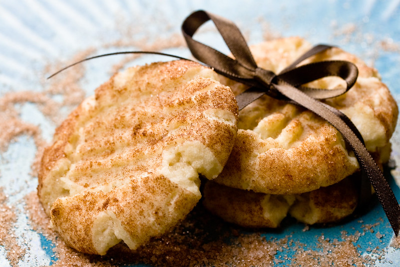

Snickerdoodle

Description.
Snickerdoodles are soft, slightly tangy cookies coated in cinnamon-sugar. Because they're rolled and covered in cinnamon-sugar, snickerdoodles tend to have a cracked appearance when they're fully baked. Nobody quite knows where the cookie got its name, but some speculate it comes from "schneckennudel" (a cinnamon-spiked German dessert).
Snickerdoodle Ingredients.
- Sugar: This snickerdoodle cookie recipe starts with 1 ½ cups of white sugar.
- Butter and Shortening: A blend of butter and shortening creates the ideal rich, fluffy, and soft texture.
- Eggs: Two large eggs add moisture and richness. Plus, they help bind the dough together.
- Vanilla: Vanilla extract lends complexity and enhances the overall flavor.
- Flour: Vanilla extract lends complexity and enhances the overall flavor.
- Cream of Tartar: Most snickerdoodle recipes call for cream of tartar, an ingredient that gives the cookies their signature tangy flavor and pillowy texture.
- Baking Soda: Baking soda acts as a leavener, which means it helps the cookies rise.
- Salt: A pinch of salt enhances the flavors of the other ingredients.
- Cinnamon-Sugar: The snickerdoodles are rolled in a sweet, cozy mixture of cinnamon and sugar before they're baked.